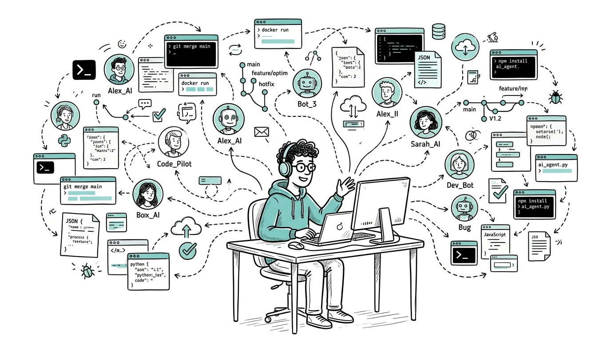
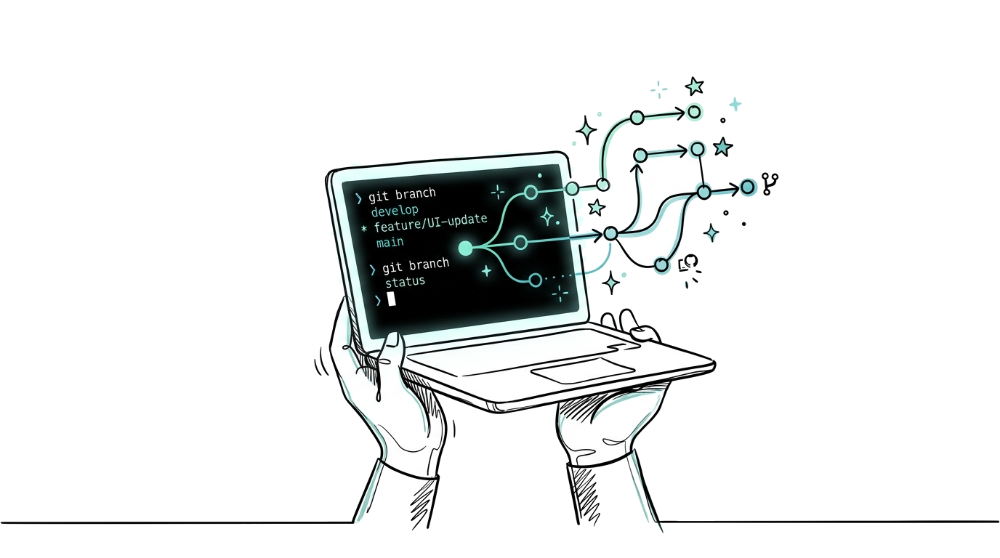

Ejecuta, coordina y supervisa Claude Code, Codex, Agy y OpenCode en paralelo. De la idea al Pull Request en tu entorno local sin fricción.
100% Local · Motor Nativo Rust + WebView2 · Sin Telemetría Invasiva

Detección automática en tu sistema · Sin configuración manual
Elige cómo deben colaborar tus agentes según la tarea que tengas entre manos:
Oruka combina un espacio de trabajo multitarea con un gestor ágil de ideas a código.
Organiza tus proyectos en pestañas. Cada proyecto puede hospedar hasta cuatro terminales vivas donde tus agentes colaboran según su especialidad técnica.
No dejes que los requerimientos se queden flotando. Estructura el prompt en el bloc lateral, asígnalo a tu agente y supervisa la creación de la rama.
Diseñado para que nunca pierdas el foco: desde que surge un requerimiento hasta que el código queda validado en una rama de Git.
Apunta los requerimientos y define qué agente asumirá cada responsabilidad. El sistema formatea las instrucciones según el modelo destinatario.
Manda la orden con un solo clic. Mira a Claude diseñar las interfaces mientras Codex implementa la lógica en la terminal contigua sin bloqueos.
OpenCode ejecuta las pruebas en caliente. Una vez validada la solución, crea la rama y publica el Pull Request en GitHub directamente.

El shell no conoce a los módulos: los carga en diferido a través de un bus de eventos estricto. Añadir un nuevo CLI o servidor MCP toma solo unas líneas de configuración.
git clone https://github.com/000johanalfaro0/oruka.git
La forma más limpia de coordinar múltiples agentes sin perder el control de tu código.
Tener a Claude planificando mientras Codex pica código y OpenCode valida los tests en paralelo cambió por completo la velocidad de mis entregas semanales.
"La integración directa con GitHub y los servidores MCP locales hace que no tenga que copiar y pegar contexto entre terminales. Es exactamente la herramienta que faltaba."
"Cero telemetría invasiva y todo en local gracias a Rust. Para proyectos con código propietario es la única solución que da total tranquilidad."